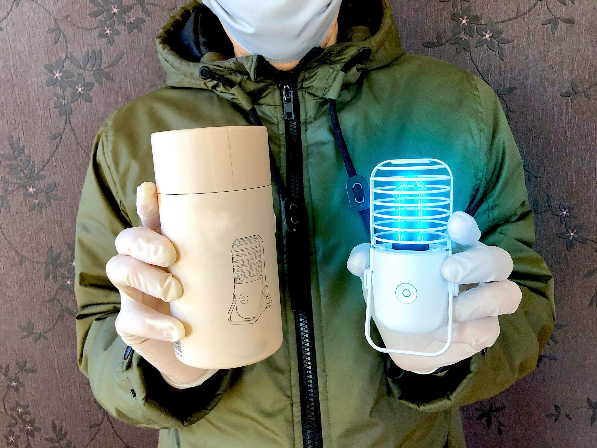
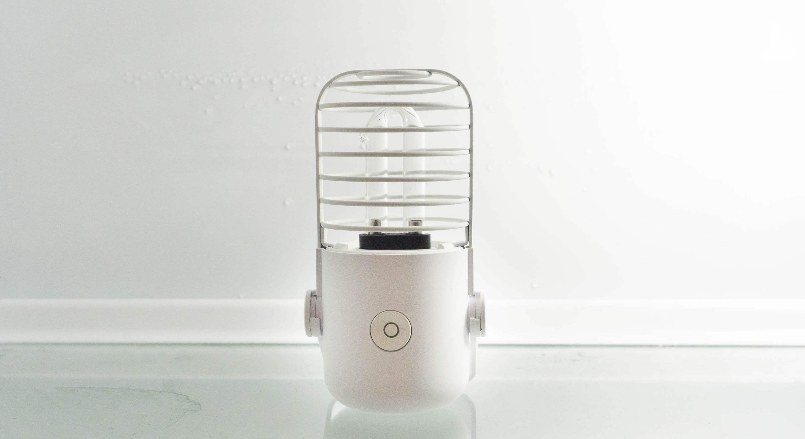
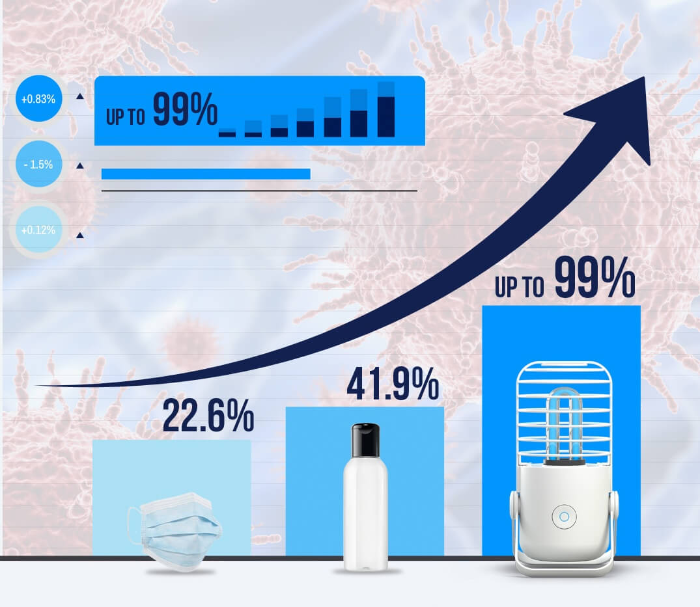
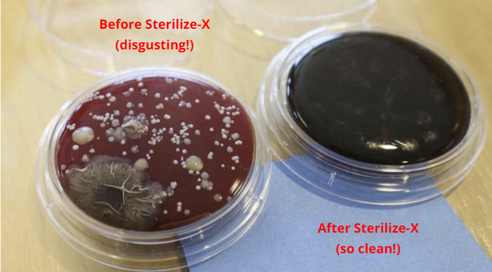
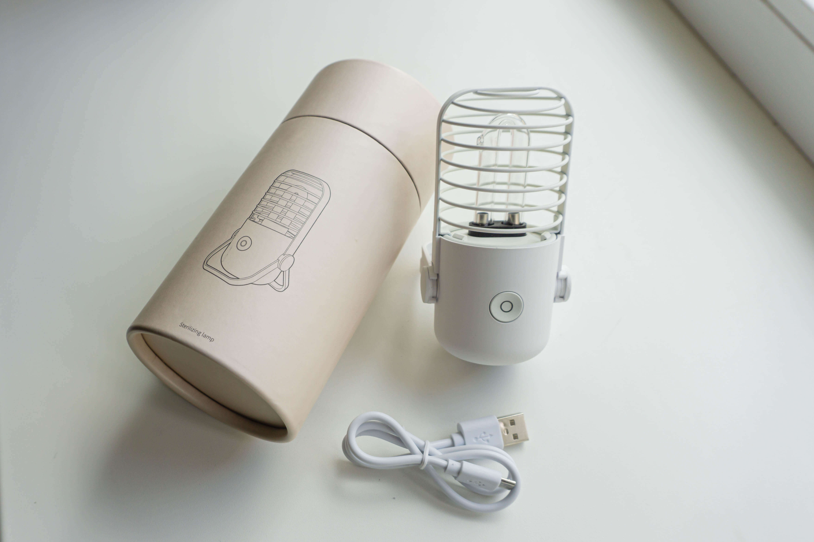

Keep Yourself Safe - Destroy Harmful Pathogens Quickly And Easily. The Idea? Genius

2020-05-16 | Maria Hill
Believe it or not, your children or pets aren’t the only ones living rent-free in your lovely homes. No matter how neat and tidy the place is, it can become a harbor of germs, bacteria and viruses if we don’t exercise the necessary care!
In this article, we are sharing one of our customer's stories about how she came to know Sterilize-X and her experience with it.
So, recently I learned something that has completely changed the way I look at my home sweet home!
I was driving home with the radio on in the background. In the story, they talked about sneaky spots in our home that are probably full of viruses and can cause diseases.
Yeah, we hear a lot of similar information these days. But something surprised me and made me think. Is my house and the gadgets that I use daily as safe as I always thought?
They started by saying that the average cell phone has “18 times more bacteria than a public restroom.” Yes, the same phone that we hold near our mouth or give to our children to play with! Well, they certainly had my attention. And, what they were saying made sense.
They said that the bacteria and germs are transferred to the phone from our hands. It made sense, since we’re always touching dirty handrails, doorknobs, and everything else we come in contact with in this world. But the story only got worse…
They continued by saying that our footwear is a huge culprit for bringing germs into our home, so it’s no surprise that their storage unit is a bacterial breeding ground. You never know what somebody stepped in! So, you are not the only one that can bring viruses from outdoors. What about children, pets, other guests? By the way, when was the last time you disinfect your shoe rack?
What about your purse which goes everywhere with you — the store, the office, and maybe even the public restroom? (Guilty.) — So it’s not surprising that it picks up a lot of bacteria in its travels.
You see, we actually wash our hands, which means we get rid of the bacteria that’s on them. But what about all those infectious microorganisms sticking on our cutting boards, countertops, makeup applicators, bath towels, toothbrushes, multiplying and surviving there. They find their way to attack our immune system, so it’s easier to catch the flu, a terrible skin rash, or even an UNDIAGNOSED disease that can take us down!
Once I came home, I went straight to the bathroom and wiped my phone down with a sanitizing wipe. There, I thought, Now it’s clean.
But how long would that really last? What about all other stuff that is in our house?
Well, I called my friend, who’s more than a little bit of a germophobe to share what I have heard. But she was so calm and slowly told me: “Dear, I’m lately using uv sterilizer called Sterilize-X, so I have no worries about all this grossness.”
What is it?
Sterilize-X is an ultraviolet light sanitizer, which uses a flash of UV light to eliminate virtually all germs. Laboratory testing shows that it can remove up to 99% of bacteria and germs!
The technology behind Sterilize-X ensures that the virus DNA is completely destroyed. In other words - microorganisms are dead! It can even neutralize “superbugs” that have developed a resistance to antibiotics! UVC light is used for air and surface disinfection even in hospitals, care homes, laboratories (no more words needed here!).
How does it work?
Turns out it’s really quite simple! All you need is to put all the stuff that you want to disinfect (phone, purse, bags, towels etc) in one room. Put the Sterilize-X in the middle, turn it on and leave the room in 30 seconds in order to achieve maximum protection.

Remote Controls
Telephone Handsets
Eyeglasses & Pens
Tablets and iPads
Laptops & Keyboards
Calculators & Phone Chargers
Desktops, Tables & Other Surfaces
And, it does all this during its short 30-minute cycle. The UV light safely sanitizes your room (and, anything else that’s inside it). At this point it is safe to re-enter the room and enjoy the crisp, clean air!
I know there are alternatives to Sterilize-X; disinfectant spray, cleaning wipes also do their job. But just imagine how long it would take to clean every corner of our home, car, or working place... No doubts, Sterilize-X saves our time here!
But… is it really worth All This Hype?
Since its debut, Sterilize-X has been constantly selling out! So much, in fact, that people are considering themselves lucky when they finally get their hands on one!
-Skeptical at first, but...Honestly, I was skeptical at first, but I have a Bio degree so I get excited about things like this and had to check it out. It definitely passed the test! The science speaks for itself. Very nifty product, works great and easy to use.
-It does in fact workActually I did a lot of research on this type of sterilization before I bought this. Everything I found by scientists or electronics reviewers said that it does in fact kill all those gross germs that are ALL OVER our house. You can’t see it — but I’ll trust the experts who say this light is working. It makes me feel better after I clean it so I guess that’s a win.
-So easy to useSIMPLE! I really liked the ease of operation; you simply put the device in, leave the room and it automatically sanitizes everything with ultraviolet light in about 30 minutes (though i didn't really time it). Once the light goes out the room is sanitized and ready to enter.
I also liked the sanitizer's styling; small size and stylish appearance make the Sterilize-X lamp look like a tiny ornament at my home.
After hearing all this hype, I wanted to get a professional’s opinion on the Sterilize-X, so I talked to Dawn Clarinwall, Pathologist at St. Eve’s Hospital. Here’s what she said…
Most people don’t realize just how hazardous all things can be. They’re basically a petri dish you hold in your hand… and hold up to your mouth.
-Dawn Clarinwall, Pathologist
The effects of UV-C light on bacteria are well-documented. Essentially, it destroys the strain by damaging the DNA structure beyond repair.
I’ve had the opportunity to test Sterilize-X firsthand in my lab, and it works as well as advertised. The bacteria are completely eliminated in about 30 minutes. Since testing it for myself, I’ve been telling the other doctors to start recommending it to their patients. It’s a small thing you can do to really protect yourself from sickness.
Also my friend shared her little experiment
First, she got 2 petri dishes. She swabbed her dirty phone and placed the swab in the first dish.
Then she left her phone in the room with Sterilize-X on. After 30 minutes she swabbed her phone again and placed the swab in the second dish.
So, after sending the petri dishes into a lab (yes, she really did go all out with this!), and waiting a few weeks, she got the results.
The first petri dish was absolutely swarming with bacteria. But, the second dish was completely clean! Check out the pictures below she sent to me…
So, what’s happening on a microscopic level - UV light destroys the DNA of bacteria. This means, bacteria and viruses can’t survive.
After hearing that endorsement from a highly respected professional, I was sold. I had to try Sterilize-X myself…
So, I ordered Sterilize-X from the official website and it showed up in the mail by the end of the week. It came in a nice, sleek modern-looking box (had this similar feel to Apple products). When I first opened the box, I could tell that the design and quality of the product was top notch.
What surprised me the most was the price as they offered me a one-time discount of 50% off! So, I took this opportunity and immediately ordered several devices for me and my parents.
I really did think it was a good deal. I mean, you’re basically paying to reduce the amount of times you and your family get sick. To me, that’s a real bargain. I’m okay with it any day of the week. You really can’t put a price on my family’s health. (And, I’m sure you feel the same way, too.)
UPDATE
UPDATE Thursday, April 09, 2020 - Sterilize-X is in extremely high demand and is selling out quick. To help people stay safe, the company is now offering a one-time discount of 50% off. To see if they are still available, click on the button below.
All content and media on the Sterilize-X is created and published online for informational purposes only. It is not intended to be a substitute for professional medical advice and should not be relied on as health or personal advice. Scientific laboratory testings do show that UVC light, like the one radiated by Sterilize-X, are able to inactivate and kill up to 99% of viruses, bacteria, mold, mildew and fungi under perfect laboratory conditions, however individual effects and results may vary.